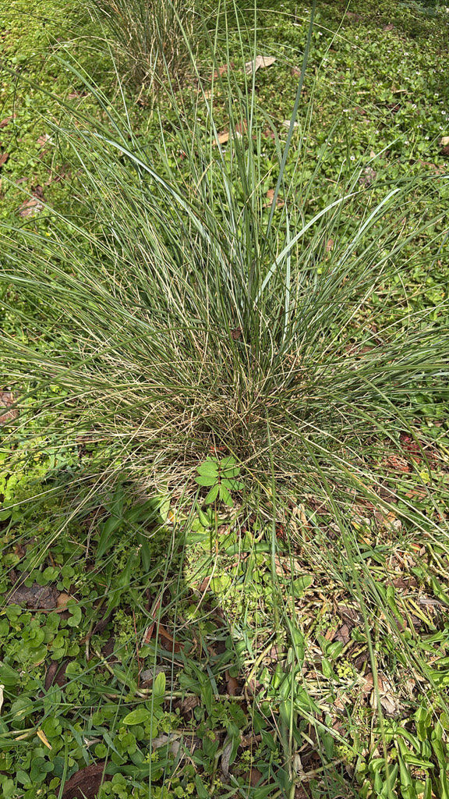

- Every October, Muhly Grass produces a cloud of pink-purple seed plumes so fine they seem to float — the effect is stunning enough that highway departments plant it in miles of roadside medians across Florida.
- Named for Gotthilf Muhlenberg — a Pennsylvania Lutheran minister who became America's first outstanding botanist while hiding from British soldiers during the Revolutionary War.
- The species no longer grows wild in Pennsylvania, Muhlenberg's home state — it's been listed as extirpated there.
- The name capillaris is Latin for 'hair-like' — referring to the wispy, almost smoke-like quality of the flower plumes.
Native to prairies, coastal grasslands, pine flatwoods, sandhills, and beach dunes from Massachusetts to Kansas, south to Florida and Texas. In Florida found in all coastal counties and many inland ones — one of the state's most widespread native grasses.
- The man this plant is named for had an extraordinary double life. Gotthilf Heinrich Ernst Muhlenberg (1753–1815) was a German-educated Lutheran minister who served congregations in Pennsylvania his entire career — and simultaneously became one of the most important botanists in early American history. He began serious botanical study while hiding from British soldiers during the Revolutionary War.
- He went on to classify and name 150 plant species in his 1785 Index Flora Lancastriensis, collaborated with European botanists, and was honored as America's first outstanding botanist. He was an early member of the American Philosophical Society — the first scientific association in the New World, founded by Benjamin Franklin.
- Ironically, Muhlenbergia capillaris no longer grows wild in Pennsylvania, the state where its namesake lived and worked — it is listed as extirpated there. It thrives here in Florida instead.
- The October bloom peak makes it one of the park's most photogenic plants at precisely the time when most other plants are winding down. The plumes start bright pink-red and gradually fade to tan through winter, giving the clump a changing seasonal personality.
Muhly Grass's dense, fine-textured clumping habit provides critical ground-level cover for small birds, lizards, frogs, and beneficial insects year-round. The seed plumes produced in fall and winter are eaten by birds including sparrows, finches, and juncos. The grass is a known attractant for ladybug beetles, which shelter in the dense foliage.
As a native grass, its root system supports soil-dwelling insects and the broader food web below ground. In coastal settings, the dense clump also provides refugia for animals moving between open and sheltered habitat.
Warm-season perennial clump grass that dies back partially in winter and flushes new growth in spring.
Airy, loosely branched pink to pinkish-red panicles appearing from early to late fall, each plume up to 12 inches long. The massed effect of multiple plants blooming together is the signature display.
Tiny caryopsis, eaten by birds. Plumes fade from pink to tan through winter and remain ornamentally attractive.
Mostly basal, flat, thin, dark green, up to 2 feet long — rolling inward and narrowing toward the tip. Wiry and fine-textured.
In fall, the pink plume cloud rising above the dark green basal clump is unmistakable. The fine, hair-like texture of the plumes explains the species name capillaris. In summer, the clean dark green mound of foliage is a useful textural contrast to broad-leaved plants. Cut back in late winter to refresh the clump.
This isn't a food plant — the seed plumes feed birds and were traditionally gathered for basket weaving — and it's not toxic to people or pets.
- © Randall Carter (CC-BY-NC), via iNaturalist